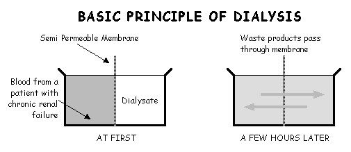

Dialysis is a process of removing waste products and excess fluid which build up in the body when the kidneys stop working. The word comes from the Greek ‘dia’ – to pass through, and ‘leuin’ meaning to loosen. Dialysis uses a membrane as a filter and a solution called dialysate to regulate the balance of fluid, salts and minerals carried in the bloodstream. The membrane may be man made as in haemodialysis or natural as in peritoneal dialysis.

Blood is taken from the body to be cleaned in a filter known as a dialyser (artificial kidney). A dialyser works on the principle of blood flowing along one side of a semi-permeable membrane made of cellulose or a similar product, with fluid which is known as dialysate flowing along the other side. The dialysate fluid contains a regulated amount of minerals normally present in the blood in safe levels. In renal failure they are present in excess. The membrane has tiny holes of different sizes so that the excess fluid and substances which are at high levels in the blood pass through to the dialysate and this effectively cleans the blood. This happens at different rates, small molecules such as potassium are removed quickly and larger ones more slowly, until the blood levels of the toxic waste products from the body are at a safe level.
Blood is taken from the body to be cleaned in a filter known as a dialyser (artificial kidney). A dialyser works on the principle of blood flowing along one side of a semi-permeable membrane made of cellulose or a similar product, with fluid which is known as dialysate flowing along the other side. The dialysate fluid contains a regulated amount of minerals normally present in the blood in safe levels. In renal failure they are present in excess. The membrane has tiny holes of different sizes so that the excess fluid and substances which are at high levels in the blood pass through to the dialysate and this effectively cleans the blood. This happens at different rates, small molecules such as potassium are removed quickly and larger ones more slowly, until the blood levels of the toxic waste products from the body are at a safe level.
A haemodialysis machine regulates how fast the blood flows, at what pressure and how quickly the exchange happens.
As only a very small amount of blood is in the dialyser at any given time, blood needs to circulate round from patient to dialyser to patient again for about 4 hours. Treatment is usually 3 times per week. This is known as the dialysis dose and is decided by the dialysis nurses and doctors for each patient in a prescription.
This type of dialysis needs access to the blood stream. Blood is carried from the patient to the dialyser and returned through dialysis lines (plastic tubes) which are connected to the patient in one of two ways:
The joining of a vein and artery just under the skin, usually on the forearm makes the vein swell to allow needles to be inserted and removed after each treatment. Between treatments only a small scar and swelling are visible.
A soft plastic tube is inserted in a large vein, either in the side of the neck or, less often, into the top of the leg and comes out further down on the chest wall or top of the leg after passing underneath the skin
Some patients dialyse in hospital; others have the equipment installed at home. This will depend on what facilities your hospital can offer, on your medical conditions and on your own preference. Many renal units have developed satellite or minimum care units which may be near your home. Such units are suitable for patients who are in good general health, not needing the services and care of a main renal unit.
If you choose home haemodialysis initial treatment and training is given at a renal unit usually found only in larger hospitals. There are advantages on home haemeodialysis, including flexibility and the ability to have the most time away from treatment without needing to rely on transport and having control over your therapy. Things to consider include how you feel and about the responsibility of being in control of your dialysis and how it will effect others that live in your home, as this can be stressful. Talk to your haemodialysis team who will be able to give you further information about this therapy.
If you have no room for a kidney machine, have no carer or need medical supervision, hospital or satellite haemodialysis is a better option. Your home is free of the equipment but you will lose flexibility as you have to fit your life around the renal unit’s regime and travelling is time consuming.
Patients have different needs and you should discuss with your doctor and specialist nurses at the renal unit which system best suits your lifestyle.
Dialysis takes over the role of the kidneys but it will not cure your kidney failure.
For some people whose kidneys have failed after an operation or a bad infection, kidney failure will only be temporary and the kidneys will recover in time. For most people, though, the kidneys will not recover and the need for dialysis will continue. Some people may decide not to have dialysis and this will result in death from kidney failure. If you are medically suitable you can be considered for a kidney transplant
There is no real substitutes for your own healthy kidneys and we cannot promise that you will feel as fit as you did before kidney failure. To keep as well as possible try and focus on the 3 Ds - dialysis, diet and drugs. Eating out is possible with a little care.
Commonly your doctor will prescribe drugs to help prevent the build-up of phosphate which combines with calcium to damage the blood vessels. are calcium carbonate and aluminium hydroxide to prevent a build-up phosphate which combines with calcium to damage the blood vessels. Resonium is taken if there is a danger of high blood potassium level as this is a life threatening condition. Some patients need vitamin and iron tablets or injections, and medication for high blood pressure is common. Erythropoetin (EPO) is very helpful in treating anaemia, which is common in many people with kidney failure.
There will be times when you will feel very tired – it’s the same with most chronic illnesses. Stick to the advice you are given and you should be well enough to do most normal activities, even if you do need to pace yourself carefully.
In addition to the doctors and nurses you will meet, most renal units have a dietitian, social worker, psychologist and home sister.
Thousands of patients have successfully passed through difficult early stages of renal failure and there’s nothing quite like talking to someone who’s ‘been there’.